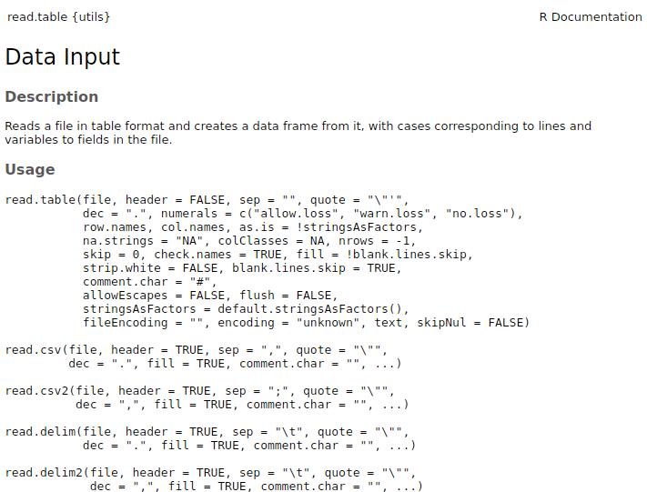

Importing and formatting data
OTS Tropical Biology 2023
Organization for Tropical Studies
Marcelo Araya-Salas, PhD
2023-06-14
Objetives
Understand the logic used by ggplot2 to structure graphs
Get familiar with its basic functions and types layer
Before importing data
There are a few habits for data entry that will make it easier to
import data correctly into R:
Reserve the first row for the header
Reserve the first column to the sampling unit
Use “_“,”.” or “-” instead of empty spaces (e.g. “Cornell_University”)
Use short names
Avoid using uncommon symbols such as ?, $,%, ^, &, *, (, ),-,#, ?,,,<,>, /, |, , [ ,] ,{, and }
Be consistent when referring to the same things (i.e. write them always in the same way)
Delete any extra comments outside the data set columns
Indicate missing values with NA (or at least empty spaces)
Don’t even think about color-coding your data in excel
Importing data
Importing data into R is a crucial and apparently simple
step. However, given the diversity of data formats and operating
systems, as well as the many possible sources of error, inputting data
in R is not always that straightforward. Most issues are
related with:
Telling
Rin which directory the file is foundTelling
Rhow the data is encoded (e.g. comma-separated, fixed width, etc)Handling empty cells and uncommon characters
Setting the working directory
To read data in R you need to specify the working directory. It can
be set with the function setwd(). The way you do this
depends on the operating system (windows, mac, Linux). The folder
directory syntax follows the nested structure of the folders. For
instance:
setwd("/home/m/Desktop/")… sets the working directory in the folder “Desktop”, which is found within “m”, which is found within “home”.
Some basic tips for setting the working directory:
Make sure the location is quoted
Make sure you have forward-slash (/) between folder names (although double backward-slashes seem to work in windows)
Do not include any file name in the folder directory name
To find the location you can look at the properties of a file in that folder and copy it
The path to the folder should be quoted (““)
The name matches exactly (better to copy/paste)
Use
list.files()to check which files are in the working directoryRcan suggest and auto-complete the folder names by pressing “tab” when within quotes:
Setting the working directory in windows
In windows it should be something like this:
setwd("C:/location")You can also do this (only on windows!):
setwd(choose.dir())That should pop-up a window where you can choose the location. However, this should only be used to figure out the correct way to write the directory location, not as part of the script itself.
Setting the working directory in OSX (mac)
For mac setting the working directory should be something like this:
setwd("/Users/yourname/..")do not include whatever you have before “users” (like macintosh… )
Setting the working directory in Linux
Similar to the code used in OSX:
setwd("/home/m/Desktop/")
The “~” (tilde) can also be used to skip the “home” and “user” folder in Linux:
setwd("~/Desktop/")
The current working directory can be checked as follows:
getwd()## [1] "/home/m/Dropbox/courses_and_workshops/OTS_TB_2023"
Reading data
Any file can be read in R. It’s just a matter of letting
R know in which format is the file encoded (e.g. what
conventions were followed when generating the file). The most common
formats to store/exchange data sets as the ones we usually handle in
biological sciences are txt, csv and
xls/xlsx.
The most commonly used function to import data in R is
read.table. The documentation of this function actually
includes all the default functions for inputting data:
?read.table

Reading .txt files
.txt files can be read using read.table. Let’s
first download a freely available data set in .txt format:
# set working directory
setwd("PUT THE FOLDER LOCATION WHERE YOU WANT TO SAVE THE FILE HERE")
download.file("http://esapubs.org/archive/ecol/E090/184/PanTHERIA_1-0_WR93_Aug2008.txt", destfile = "pantheria_mammals_data.txt")You can also manually download the file from here
The file can be input into R as follows:
# read file
pntr_dt <- read.table("pantheria_mammals_data.txt", stringsAsFactors = FALSE, sep = "\t", header = TRUE)# check structure
head(pntr_dt)| MSW93_Order | MSW93_Family | MSW93_Genus | MSW93_Species | MSW93_Binomial | X1.1_ActivityCycle |
|---|---|---|---|---|---|
| Rodentia | Muridae | Abditomys | latidens | Abditomys latidens | -999 |
| Rodentia | Muridae | Abrawayaomys | ruschii | Abrawayaomys ruschii | -999 |
| Rodentia | Abrocomidae | Abrocoma | bennettii | Abrocoma bennettii | 1 |
| Rodentia | Abrocomidae | Abrocoma | boliviensis | Abrocoma boliviensis | -999 |
| Rodentia | Abrocomidae | Abrocoma | cinerea | Abrocoma cinerea | -999 |
| Chiroptera | Pteropodidae | Acerodon | celebensis | Acerodon celebensis | -999 |
| X5.1_AdultBodyMass_g | X8.1_AdultForearmLen_mm | X13.1_AdultHeadBodyLen_mm | X2.1_AgeatEyeOpening_d |
|---|---|---|---|
| 268 | -999.00 | 223.99 | -999 |
| 63 | -999.00 | -999.00 | -999 |
| 251 | -999.00 | -999.00 | -999 |
| 158 | -999.00 | -999.00 | -999 |
| 194 | -999.00 | -999.00 | -999 |
| 382 | 133.49 | 201.55 | -999 |
The file name is quoted and contains the file extension.
Note that the value -999 is used to define empty cells. We can read this values as NAs while importing the data using the ‘na.strings’ argument:
# read file
pntr_dt <- read.table("pantheria_mammals_data.txt", sep = "\t", header = TRUE, na.strings = "-999")
# check structure
head(pntr_dt)| MSW93_Order | MSW93_Family | MSW93_Genus | MSW93_Species | MSW93_Binomial | X1.1_ActivityCycle |
|---|---|---|---|---|---|
| Rodentia | Muridae | Abditomys | latidens | Abditomys latidens | NA |
| Rodentia | Muridae | Abrawayaomys | ruschii | Abrawayaomys ruschii | NA |
| Rodentia | Abrocomidae | Abrocoma | bennettii | Abrocoma bennettii | 1 |
| Rodentia | Abrocomidae | Abrocoma | boliviensis | Abrocoma boliviensis | NA |
| Rodentia | Abrocomidae | Abrocoma | cinerea | Abrocoma cinerea | NA |
| Chiroptera | Pteropodidae | Acerodon | celebensis | Acerodon celebensis | NA |
| X5.1_AdultBodyMass_g | X8.1_AdultForearmLen_mm | X13.1_AdultHeadBodyLen_mm | X2.1_AgeatEyeOpening_d |
|---|---|---|---|
| 268 | NA | 223.99 | NA |
| 63 | NA | NA | NA |
| 251 | NA | NA | NA |
| 158 | NA | NA | NA |
| 194 | NA | NA | NA |
| 382 | 133.49 | 201.55 | NA |
Reading .csv files
Again, we can download an example file online:
download.file("http://www.birds.cornell.edu/clementschecklist/wp-content/uploads/2013/03/eBird_Taxonomy_v2017_18Aug2017.csv", destfile = "clements_bird_list.csv")
clm_lst <- read.csv("clements_bird_list.csv", stringsAsFactors = FALSE)
head(clm_lst)| TAXON_ORDER | CATEGORY | SPECIES_CODE | PRIMARY_COM_NAME | SCI_NAME |
|---|---|---|---|---|
| 3 | species | ostric2 | Common Ostrich | Struthio camelus |
| 5 | species | ostric3 | Somali Ostrich | Struthio molybdophanes |
| 6 | slash | y00934 | Common/Somali Ostrich | Struthio camelus/molybdophanes |
| 7 | species | grerhe1 | Greater Rhea | Rhea americana |
| 13 | species | lesrhe2 | Lesser Rhea | Rhea pennata |
| 14 | issf | lesrhe4 | Lesser Rhea (Puna) | Rhea pennata tarapacensis/garleppi |
| ORDER1 | FAMILY | SPECIES_GROUP | REPORT_AS |
|---|---|---|---|
| Struthioniformes | Struthionidae (Ostriches) | Ostriches | |
| Struthioniformes | Struthionidae (Ostriches) | ||
| Struthioniformes | Struthionidae (Ostriches) | ||
| Rheiformes | Rheidae (Rheas) | Rheas | |
| Rheiformes | Rheidae (Rheas) | ||
| Rheiformes | Rheidae (Rheas) | lesrhe2 |
You can also manually download the file from here
As in the previous example, we can tell R how to
identify empty cells using the ‘na.strings’ argument:
clm_lst <- read.csv("clements_bird_list.csv", stringsAsFactors = FALSE, na.strings = "")
head(clm_lst)| TAXON_ORDER | CATEGORY | SPECIES_CODE | PRIMARY_COM_NAME | SCI_NAME |
|---|---|---|---|---|
| 3 | species | ostric2 | Common Ostrich | Struthio camelus |
| 5 | species | ostric3 | Somali Ostrich | Struthio molybdophanes |
| 6 | slash | y00934 | Common/Somali Ostrich | Struthio camelus/molybdophanes |
| 7 | species | grerhe1 | Greater Rhea | Rhea americana |
| 13 | species | lesrhe2 | Lesser Rhea | Rhea pennata |
| 14 | issf | lesrhe4 | Lesser Rhea (Puna) | Rhea pennata tarapacensis/garleppi |
| ORDER1 | FAMILY | SPECIES_GROUP | REPORT_AS |
|---|---|---|---|
| Struthioniformes | Struthionidae (Ostriches) | Ostriches | NA |
| Struthioniformes | Struthionidae (Ostriches) | NA | NA |
| Struthioniformes | Struthionidae (Ostriches) | NA | NA |
| Rheiformes | Rheidae (Rheas) | Rheas | NA |
| Rheiformes | Rheidae (Rheas) | NA | NA |
| Rheiformes | Rheidae (Rheas) | NA | lesrhe2 |
Reading excel files
Most researchers enter data into excel spreadsheets. So it would be pretty handy to read the data directly from there. To read xls and xlsx files we need to install the package “readxl” (there are other packages that can be used but they all work similarly):
install.packages(pkgs = "readxl")
And load it:
library(readxl)
As we did above, download an example file from an online repository. In this case is the same Clements bird taxonomy list in xlsx format:
download.file("http://www.birds.cornell.edu/clementschecklist/wp-content/uploads/2017/08/eBird_Taxonomy_v2017_18Aug2017.xlsx", destfile = "clements_bird_list.xlsx")You can also manually download the file from here
Now we can use the function read_excel() to read the
file:
# read file
clm_lst2 <- read_excel("clements_bird_list.xlsx", sheet = 1)
head(clm_lst2)| TAXON_ORDER | CATEGORY | SPECIES_CODE | PRIMARY_COM_NAME | SCI_NAME |
|---|---|---|---|---|
| 3 | species | ostric2 | Common Ostrich | Struthio camelus |
| 5 | species | ostric3 | Somali Ostrich | Struthio molybdophanes |
| 6 | slash | y00934 | Common/Somali Ostrich | Struthio camelus/molybdophanes |
| 7 | species | grerhe1 | Greater Rhea | Rhea americana |
| 13 | species | lesrhe2 | Lesser Rhea | Rhea pennata |
| 14 | issf | lesrhe4 | Lesser Rhea (Puna) | Rhea pennata tarapacensis/garleppi |
| ORDER1 | FAMILY | SPECIES_GROUP | REPORT_AS |
|---|---|---|---|
| Struthioniformes | Struthionidae (Ostriches) | Ostriches | NA |
| Struthioniformes | Struthionidae (Ostriches) | NA | NA |
| Struthioniformes | Struthionidae (Ostriches) | NA | NA |
| Rheiformes | Rheidae (Rheas) | Rheas | NA |
| Rheiformes | Rheidae (Rheas) | NA | NA |
| Rheiformes | Rheidae (Rheas) | NA | lesrhe2 |
You need to specify the file name (including extension) and the excel
sheet (tab) name. read_excel() auto detects the format from
the file extension. The functions read_xls() and
read_xlsx() can be used to read files without
extension.
Exercise 1
All default functions to input data into R have a
counterpart to export the same type of data. The names of these other
functions are similar to the ones for reading data, although they
typically start with “write” or “save”.
1.1 What are the names of the default functions for exporting the
data formats we used above? (hint: try apropos to check
which functions are available)
1.2 Export the mammals data as a .csv file
1.3 Export the mammals data again, this time excluding the row names
1.4 Read the .csv file using read.table
1.5 What other packages can import excel files into
R?
1.6 Can you export an excel file or add data to an existing excel
file from R?
1.7 Using the “clements_bird_list.csv” file, how would you tell
R to read both “Rheiformes” and “Ostriches” as empty cells
(while still reading empty cells as empty cells)?
Formatting data
This section deals with organizing your data in a way that simplify its handling, exploration and analysis. As you can probably guess, the more consistent things are done, the more predictable they become. This also applies to data. If data is organized with the same logic, you can expect the same type of manipulations and analyses to be applicable on different data sets. Organizing the data is a key (but usually neglected) aspect of the data analysis workflow. When data is properly organized you will spend much less time on formatting and more time on the actual analytic questions.
When possible, we will run the data formatting examples using both
the ‘tidyr’ package and the base R functions.
Tidy data
“Tidy data” is a logic for organizing data sets in a consistent and intuitive way. To run some of the code below you will need the ‘tidyr’ and ‘dplyr’ packages, which can be installed/loaded as follows:
install.packages(pkgs = "tidyr")
install.packages(pkgs = "dplyr")
library(tidyr)
library(dplyr)
The same data can be represented in many ways. In the example below each data set shows exactly the same values of four variables country, year, population, and cases, but in each data set values are organized in a different way. The data shows the number of tuberculosis cases in Afghanistan, Brazil, and China between 1999 and 2000:
as.data.frame(table1)| country | year | cases | population |
|---|---|---|---|
| Afghanistan | 1999 | 745 | 19987071 |
| Afghanistan | 2000 | 2666 | 20595360 |
| Brazil | 1999 | 37737 | 172006362 |
| Brazil | 2000 | 80488 | 174504898 |
| China | 1999 | 212258 | 1272915272 |
| China | 2000 | 213766 | 1280428583 |
as.data.frame(table2)| country | year | type | count |
|---|---|---|---|
| Afghanistan | 1999 | cases | 745 |
| Afghanistan | 1999 | population | 19987071 |
| Afghanistan | 2000 | cases | 2666 |
| Afghanistan | 2000 | population | 20595360 |
| Brazil | 1999 | cases | 37737 |
| Brazil | 1999 | population | 172006362 |
| Brazil | 2000 | cases | 80488 |
| Brazil | 2000 | population | 174504898 |
| China | 1999 | cases | 212258 |
| China | 1999 | population | 1272915272 |
| China | 2000 | cases | 213766 |
| China | 2000 | population | 1280428583 |
as.data.frame(table3)| country | year | rate |
|---|---|---|
| Afghanistan | 1999 | 745/19987071 |
| Afghanistan | 2000 | 2666/20595360 |
| Brazil | 1999 | 37737/172006362 |
| Brazil | 2000 | 80488/174504898 |
| China | 1999 | 212258/1272915272 |
| China | 2000 | 213766/1280428583 |
Or even spread across 2 different data sets:
as.data.frame(table4a)| country | 1999 | 2000 |
|---|---|---|
| Afghanistan | 745 | 2666 |
| Brazil | 37737 | 80488 |
| China | 212258 | 213766 |
as.data.frame(table4b)| country | 1999 | 2000 |
|---|---|---|
| Afghanistan | 19987071 | 20595360 |
| Brazil | 172006362 | 174504898 |
| China | 1272915272 | 1280428583 |
All these data sets contained the same underlying data. However, they are not equally easy to use.
There are three interrelated rules to make a data set tidy:
Each variable must have its own column
Each observation must have its own row
Each value must have its own cell
This figure shows the rules visually:
 * Modified from R for Data Science
* Modified from R for Data Science
These three rules are interrelated because it’s impossible to only satisfy two of the three. That interrelationship leads to an even simpler set of practical instructions:
Put each data set in a data frame
Put each variable in a column
In the example above, only table1 is tidy. It’s the only
representation where each column is a variable. There are two main
advantages of formatting the data in this way:
If you have a consistent data structure, it’s easier to learn the tools that work with it because they have an underlying uniformity
Placing variables in columns fits well
R’s vectorized nature. As we have seen, built-inRfunctions work with vectors of values. That makes transforming tidy data feel particularly natural
Exercise 2
2.1 Describe how the variables and observations are organized in each of the sample data frames
2.2 Calculate the rate of cases per 10000 people for “table1”, “table2” and “table4a”/“table4b”
Gathering data
A common problem is a data set where some of the column names are not names of variables, but values of a variable. Take “table4a”: the column names 1999 and 2000 represent values of the year variable, and each row represents two observations, not one:
as.data.frame(table4a)| country | 1999 | 2000 |
|---|---|---|
| Afghanistan | 745 | 2666 |
| Brazil | 37737 | 80488 |
| China | 212258 | 213766 |
To tidy a data set like this, we need to gather those columns into a new pair of variables. To do this we need three parameters:
The set of columns that represent values, not variables. In this example, those are the columns
1999and2000The name of the variable whose values form the column names. In the ‘tidyr’ syntax that is called the
key, which in this case isyearThe name of the variable whose values are spread over the cells. In the ‘tidyr’ syntax that is called that
value, which in this case is the number ofcases
These parameters can be used to create a tidy data set using the
function gather():
gather(table4a, key = "year", value = "cases", `1999`, `2000`)| country | year | cases |
|---|---|---|
| Afghanistan | 1999 | 745 |
| Brazil | 1999 | 37737 |
| China | 1999 | 212258 |
| Afghanistan | 2000 | 2666 |
| Brazil | 2000 | 80488 |
| China | 2000 | 213766 |
We can visualize this formatting as follows:
 * Modified from R for Data Science
* Modified from R for Data Science
gather() can also be used to tidy table4b.
The only difference is the variable stored in the cell values:
gather(data = table4b, key = "year", value = "population", `1999`, `2000`)| country | year | population |
|---|---|---|
| Afghanistan | 1999 | 19987071 |
| Brazil | 1999 | 172006362 |
| China | 1999 | 1272915272 |
| Afghanistan | 2000 | 20595360 |
| Brazil | 2000 | 174504898 |
| China | 2000 | 1280428583 |
To combine the tidied versions of table4a and
table4b into a single data frame (or ‘tibble’), we can
either use dplyr::left_join() or merge() from
base R:
tidy4a <- gather(table4a, key = "year", value = "cases", `1999`, `2000`)
tidy4b <- gather(table4b, key = "year", value = "population", `1999`, `2000`)
left_join(x = tidy4a, y = tidy4b, by = c("country", "year"))| country | year | cases | population |
|---|---|---|---|
| Afghanistan | 1999 | 745 | 19987071 |
| Brazil | 1999 | 37737 | 172006362 |
| China | 1999 | 212258 | 1272915272 |
| Afghanistan | 2000 | 2666 | 20595360 |
| Brazil | 2000 | 80488 | 174504898 |
| China | 2000 | 213766 | 1280428583 |
merge(x = tidy4a, y = tidy4b, by = c("country", "year"))| country | year | cases | population |
|---|---|---|---|
| Afghanistan | 1999 | 745 | 19987071 |
| Afghanistan | 2000 | 2666 | 20595360 |
| Brazil | 1999 | 37737 | 172006362 |
| Brazil | 2000 | 80488 | 174504898 |
| China | 1999 | 212258 | 1272915272 |
| China | 2000 | 213766 | 1280428583 |
Spreading
Spreading is the opposite of gathering. You use it when an
observation is scattered across multiple rows. For example, in
table2 an observation is a country in a year, but each
observation is spread across two rows:
table2| country | year | type | count |
|---|---|---|---|
| Afghanistan | 1999 | cases | 745 |
| Afghanistan | 1999 | population | 19987071 |
| Afghanistan | 2000 | cases | 2666 |
| Afghanistan | 2000 | population | 20595360 |
| Brazil | 1999 | cases | 37737 |
| Brazil | 1999 | population | 172006362 |
| Brazil | 2000 | cases | 80488 |
| Brazil | 2000 | population | 174504898 |
| China | 1999 | cases | 212258 |
| China | 1999 | population | 1272915272 |
| China | 2000 | cases | 213766 |
| China | 2000 | population | 1280428583 |
To tidy this data set up, we only need two parameters:
The column that contains variable names, the
keycolumn. Here, it’stype.The column that contains values forms multiple variables, the
valuecolumn. Here it’scount.
To do this we can use spread():
spread(table2, key = "type", value = "count")| country | year | cases | population |
|---|---|---|---|
| Afghanistan | 1999 | 745 | 19987071 |
| Afghanistan | 2000 | 2666 | 20595360 |
| Brazil | 1999 | 37737 | 172006362 |
| Brazil | 2000 | 80488 | 174504898 |
| China | 1999 | 212258 | 1272915272 |
| China | 2000 | 213766 | 1280428583 |
which can be visualized as follows:
 * Modified from R for Data Science
* Modified from R for Data Science
spread() and gather() are complementary
functions. gather() makes wide tables narrower and longer;
spread() makes long tables shorter and wider.
Exercise 3
3.1 Tidy up the following data set on tree height for 2 species:
plnt_sz <- data.frame(forest = c("old_growth", "disturbed"),
Species_1 = c(154, 160),
Species_2 = c(120, 113))
Separating and uniting
So far we have fixed “table2” and “table4”, but not “table3”.
“table3” has a different problem: we have one column (rate)
that contains two variables (cases and population*). This can
be fixed using the separate() function . We will also look
at its complementunite(), which is used when a single
variable is spread across multiple columns.
Separate
separate() pulls apart one column into multiple columns,
by splitting wherever a separator character appears. Take
table3:
as.data.frame(table3)| country | year | rate |
|---|---|---|
| Afghanistan | 1999 | 745/19987071 |
| Afghanistan | 2000 | 2666/20595360 |
| Brazil | 1999 | 37737/172006362 |
| Brazil | 2000 | 80488/174504898 |
| China | 1999 | 212258/1272915272 |
| China | 2000 | 213766/1280428583 |
Visually it does something like this:
 * Modified from R for Data Science
* Modified from R for Data Science
The rate column contains both cases and
population variables, and we need to split it into two
variables. separate() takes the name of the column to
separate, and the names of the new columns to be created:
separate(data = table3, col = rate, into = c("cases", "population"))| country | year | cases | population |
|---|---|---|---|
| Afghanistan | 1999 | 745 | 19987071 |
| Afghanistan | 2000 | 2666 | 20595360 |
| Brazil | 1999 | 37737 | 172006362 |
| Brazil | 2000 | 80488 | 174504898 |
| China | 1999 | 212258 | 1272915272 |
| China | 2000 | 213766 | 1280428583 |
By default, separate() will split based on any
non-alphanumeric character (i.e. a character that isn’t a number or
letter). In the code above, separate() split the values of
rate at the forward slash characters. This can be explicitly
stated (to avoid any errors):
tb3 <- separate(data = table3, col = rate, into = c("cases", "population"), sep = "/")
tb3 | country | year | cases | population |
|---|---|---|---|
| Afghanistan | 1999 | 745 | 19987071 |
| Afghanistan | 2000 | 2666 | 20595360 |
| Brazil | 1999 | 37737 | 172006362 |
| Brazil | 2000 | 80488 | 174504898 |
| China | 1999 | 212258 | 1272915272 |
| China | 2000 | 213766 | 1280428583 |
## tibble [6 × 4] (S3: tbl_df/tbl/data.frame)
## $ country : chr [1:6] "Afghanistan" "Afghanistan" "Brazil" "Brazil" ...
## $ year : num [1:6] 1999 2000 1999 2000 1999 ...
## $ cases : chr [1:6] "745" "2666" "37737" "80488" ...
## $ population: chr [1:6] "19987071" "20595360" "172006362" "174504898" ...
Note that the case and population are character
columns. By default separate() leaves the type of the new
columns as in the original one. In this case this is not ideal as those
really are numbers. We can ask separate() to try and
convert to better types using convert = TRUE:
tb3 <- separate(data = table3, col = rate, into = c("cases", "population"), convert = TRUE)
str(tb3)## tibble [6 × 4] (S3: tbl_df/tbl/data.frame)
## $ country : chr [1:6] "Afghanistan" "Afghanistan" "Brazil" "Brazil" ...
## $ year : num [1:6] 1999 2000 1999 2000 1999 ...
## $ cases : int [1:6] 745 2666 37737 80488 212258 213766
## $ population: int [1:6] 19987071 20595360 172006362 174504898 1272915272 1280428583
You can also pass a vector of integers to sep, which
will be interpreted as positions to split at. Positive values start at 1
on the far-left of the strings; negative value start at -1 on the
far-right of the strings. When using integers to separate strings, the
length of sep should be one less than the number of names
in into. You can use this to separate the last two digits
of each year:
separate(data = table3, col = year, into = c("century", "year"),
sep = 2)| country | century | year | rate |
|---|---|---|---|
| Afghanistan | 19 | 99 | 745/19987071 |
| Afghanistan | 20 | 00 | 2666/20595360 |
| Brazil | 19 | 99 | 37737/172006362 |
| Brazil | 20 | 00 | 80488/174504898 |
| China | 19 | 99 | 212258/1272915272 |
| China | 20 | 00 | 213766/1280428583 |
Separating columns can also be done with base R,
although it takes a bit more coding:
table3$cases <- sapply(table3$rate, function(x) try(strsplit(x, "/")[[1]][1]), USE.NAMES = FALSE)
table3$population <- sapply(table3$rate, function(x) try(strsplit(x, "/")[[1]][2]), USE.NAMES = FALSE)
tb3 | country | year | rate | cases | population |
|---|---|---|---|---|
| Afghanistan | 1999 | 745/19987071 | 745 | 19987071 |
| Afghanistan | 2000 | 2666/20595360 | 2666 | 20595360 |
| Brazil | 1999 | 37737/172006362 | 37737 | 172006362 |
| Brazil | 2000 | 80488/174504898 | 80488 | 174504898 |
| China | 1999 | 212258/1272915272 | 212258 | 1272915272 |
| China | 2000 | 213766/1280428583 | 213766 | 1280428583 |
## tibble [6 × 4] (S3: tbl_df/tbl/data.frame)
## $ country : chr [1:6] "Afghanistan" "Afghanistan" "Brazil" "Brazil" ...
## $ year : num [1:6] 1999 2000 1999 2000 1999 ...
## $ cases : chr [1:6] "745" "2666" "37737" "80488" ...
## $ population: chr [1:6] "19987071" "20595360" "172006362" "174504898" ...
Unite
unite() is the inverse of separate():
combining multiple columns into a single column:
 * Modified from R for Data Science
* Modified from R for Data Science
However, you will need it much less frequently than
separate().
We can use unite() to rejoin the century and
year columns that we created above:
unite(data = table5, col = "new", "century", "year")| country | new | rate |
|---|---|---|
| Afghanistan | 19_99 | 745/19987071 |
| Afghanistan | 20_00 | 2666/20595360 |
| Brazil | 19_99 | 37737/172006362 |
| Brazil | 20_00 | 80488/174504898 |
| China | 19_99 | 212258/1272915272 |
| China | 20_00 | 213766/1280428583 |
In this function we can also use the sep argument
(although in this example it was not specified).
Exercise 3
3.1 Unite century and year in “table5” using base
R (hint: paste())
References
Clements, J. F., T. S. Schulenberg, M. J. Iliff, D. Roberson, T. A. Fredericks, B. L. Sullivan, and C. L. Wood. 2017. The eBird/Clements checklist of birds of the world: v2016.
Jones, Jon Bielby, Marcel Cardillo, Susanne A. Fritz, Justin O’Dell, C. David L. Orme, Kamran Safi, Wes Sechrest, Elizabeth H. Boakes, Chris Carbone, Christina Connolly, Michael J. Cutts, Janine K. Foster, Richard Grenyer, Michael Habib, Christopher A. Plaster, Samantha A. Price, Elizabeth A. Rigby, Janna Rist, Amber Teacher, Olaf R. P. Bininda-Emonds, John L. Gittleman, Georgina M. Mace, and Andy Purvis. 2009. PanTHERIA: a species-level database of life history, ecology, and geography of extant and recently extinct mammals. Ecology 90:2648.
Wickham, Hadley, and Garrett Grolemund. 2016. R for data science: import, tidy, transform, visualize, and model data. website
Session information
## R version 4.2.2 Patched (2022-11-10 r83330)
## Platform: x86_64-pc-linux-gnu (64-bit)
## Running under: Ubuntu 20.04.5 LTS
##
## Matrix products: default
## BLAS: /usr/lib/x86_64-linux-gnu/blas/libblas.so.3.9.0
## LAPACK: /usr/lib/x86_64-linux-gnu/lapack/liblapack.so.3.9.0
##
## locale:
## [1] LC_CTYPE=es_ES.UTF-8 LC_NUMERIC=C
## [3] LC_TIME=es_CR.UTF-8 LC_COLLATE=es_ES.UTF-8
## [5] LC_MONETARY=es_CR.UTF-8 LC_MESSAGES=es_ES.UTF-8
## [7] LC_PAPER=es_CR.UTF-8 LC_NAME=C
## [9] LC_ADDRESS=C LC_TELEPHONE=C
## [11] LC_MEASUREMENT=es_CR.UTF-8 LC_IDENTIFICATION=C
##
## attached base packages:
## [1] stats graphics grDevices utils datasets methods base
##
## other attached packages:
## [1] dplyr_1.1.0 tidyr_1.3.0 readxl_1.4.1 kableExtra_1.3.4
## [5] knitr_1.42 ggplot2_3.4.2 RColorBrewer_1.1-3
##
## loaded via a namespace (and not attached):
## [1] cellranger_1.1.0 bslib_0.4.2 compiler_4.2.2 pillar_1.9.0
## [5] jquerylib_0.1.4 tools_4.2.2 digest_0.6.31 viridisLite_0.4.2
## [9] jsonlite_1.8.4 evaluate_0.21 lifecycle_1.0.3 tibble_3.2.1
## [13] gtable_0.3.3 pkgconfig_2.0.3 rlang_1.1.1 cli_3.6.1
## [17] rstudioapi_0.14 yaml_2.3.7 xfun_0.39 fastmap_1.1.1
## [21] stringr_1.5.0 xml2_1.3.4 httr_1.4.6 withr_2.5.0
## [25] systemfonts_1.0.4 generics_0.1.3 vctrs_0.6.2 sass_0.4.6
## [29] webshot_0.5.4 grid_4.2.2 tidyselect_1.2.0 svglite_2.1.0
## [33] glue_1.6.2 R6_2.5.1 fansi_1.0.4 rmarkdown_2.21
## [37] purrr_1.0.1 magrittr_2.0.3 scales_1.2.1 htmltools_0.5.5
## [41] rvest_1.0.3 colorspace_2.1-0 utf8_1.2.3 stringi_1.7.12
## [45] munsell_0.5.0 cachem_1.0.8